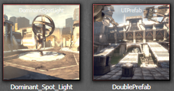

UDN
Search public documentation:
ContentBlogArchive
日本語訳
中国翻译
한국어
Interested in the Unreal Engine?
Visit the Unreal Technology site.
Looking for jobs and company info?
Check out the Epic games site.
Questions about support via UDN?
Contact the UDN Staff
中国翻译
한국어
Interested in the Unreal Engine?
Visit the Unreal Technology site.
Looking for jobs and company info?
Check out the Epic games site.
Questions about support via UDN?
Contact the UDN Staff
UE3 Home > Unreal Engine 3 Basics > Unreal Engine Content Creation Blog > Content Creation Blog Archives
Content Creation Blog Archives
Archived Posts...
- November 2010
- October 2010
- September 2010
- August 2010
- July 2010
- June 2010
- May 2010
- April 2010
- March 2010
- Processing Optimized Normals
- Asset Consolidation
- Encoding Video
- Dynamically Shadowed Translucency
- Changes to previewing unbuilt lighting
- Cascaded Shadow Maps and DominantDirectionalLightMovable
- Package List Filter
- Drag and Drop Changes
- Material Editor Node Previewing
- Property Window Script-Defined Ordering
- Copy/Paste Asset Reference
- MipGenSettings
- SkeletalMeshCinematicActor
- February 2010
- January 2010
- December 2009
- November 2009
- October 2009
- September 2009
November 2010
Vertex color matching tool
posted on 2010/11/29 by MattKuhlenschmidt Up until now if you reimported a static mesh that had instanced vertex colors with a different vertex count than the number of vertex colors on the instance you got errors like this in map checks and during cooking: "StaticMeshActor_73 (LOD 0) has hand-painted vertex colors that no longer match the original StaticMesh" This type of warning basically made your vertex colors simply nonexistent on console and look wrong on PC. To remedy that we have introduced a new feature to mesh paint that lets you fix up vertex colors if they don't match up with the static mesh.This feature will only be available if a mesh needs fixup, otherwise it will be ghosted. The tool works well in most cases especially when you are only making small tweaks. The more drastic the change to the mesh, the more unlikely the colors will match. The feature is designed to always match some color even if the changes are drastic. We elected not to make this tool automatic because that would prevent people from easily opting out of the fixup if they didn't like the results. Additionally, adding the feature to mesh paint means you can easily touchup after the fix is applied. Original mesh:
Lower poly mesh with Fixup applied:
October 2010
Bloom improvements
posted on 2010/10/29 by Martin Mittring Documentation here: Bloom- Improved quality and flexibility by allowing to shape the shape of the bloom effect
- Improved performce compared to old method when using large radius
Multiple MotionBlur improvements
posted on 2010/10/28 by Martin Mittring Documentation here: MotionBlur MotionBlurSoftEdge MotionBlurSkinning.- The silhuette of motion blurred objects is blurred at little extra cost (Fixes the artifact where motion blurred objects only blur inside themselves).
- Exposed console commands for run time tweaking.
- SkinnedMesh (bone animated objects) motion blur is now optionally per bone (PC and Xbox360).
Tonemapper improvements
posted on 2010/10/28 by Martin Mittring Documentation here: ColorGrading.- Exposed new customizable tonemapper to adjust the contrast enhancing part of the filmic tonemapper. This allows to brightens up the darker image colors.
September 2010
Bulk texture property editing
posted on 2010/09/01 by Jason Bestimt If you need to make bulk changes to textures, now you can just multi-select in the content browser, right-click and select "Properties...".August 2010
One pass lighting for hair
posted on 2010/08/04 by Daniel Wright Up until now UE3 has only had multipass lighting for translucency. Lighting translucency in multiple passes breaks down with multiple overlapping layers in the same mesh giving an overly bright result:The August QA build will have a one pass lighting method which produces the correct blending result:
The new one pass lighting is the default for SkeletalMeshCinematicActor's, so place a SkeletalMeshCinematicActor to preview the lighting in the editor. bUseOnePassLightingOnTranslucency must be set to true in script on gameplay pawns to use the one pass lighting. In order to do the lighting in one pass, lights other than the dominant light (or non-rim light in cinematics) are approximated with a single unshadowed SH light. The difference is not noticeable in most cases. Thanks to the approximation, one pass lighting uses about half the number of instructions as multipass lighting so hair will be much cheaper.
Whole scene shadows for point lights
posted on 2010/08/04 by Daniel Wright The August QA build will have whole scene shadows for point lights. These are enabled if:- The light is a PointLightMovable casting Normal shadows
- The light is any point light type with precomputed shadows (toggleable or normal PointLight), and lighting is unbuilt for that light, and it is selected in the editor
July 2010
New Character indirect lighting settings
posted on 2010/07/20 by Daniel Wright New settings have been added to WorldInfo to provide more control over character indirect lighting:These settings replace the old LightEnvironmentIndirectContrastFactor as they provide more functionality. They are applied at runtime so you can tweak them in the editor and see the result without rebuilding lighting. They only affect light environments with bIsCharacterLightEnvironment=true, which must be set in unreal script. SkeletalMeshCinematicActors have this enabled by default, so you can place them around the level for previewing.
Here's a SkeletalMeshCinematicActor placed in a level lit with Lightmass with a large IndirectLightingScale on the directional light, which is causing the backside of the character to receive a lot of indirect lighting, resulting in low contrast between his lit and shadowed side:
Here's the same scene with CharacterLitIndirectBrightness=.01 and CharacterLitIndirectContrastFactor=2:
Detail Lighting editor viewmode
posted on 2010/07/20 by Daniel Wright There's a new editor viewmode called Detail Lighting, which replaces diffuse color and specular color with constants, but keeps all other material parameters like normal map, opacity mask, etc. This viewmode is useful for isolating lighting without diffuse material color influence. The old 'lighting only' viewmode is still useful for looking at lightmap artifacts.The new viewmode button is next to the Lit viewmode:
Precomputed Visibility
posted on 2010/07/07 by Daniel Wright The next QA build will have support for precalculating visibility. Documentation here: PrecomputedVisibility.Source Control Revert Dialog
posted on 2010/07/06 by Billy Bramer The editor now provides a custom revert dialog whenever using the context menu option to revert files within the content browser. The dialog serves to prevent reverting files on accident, as well as to give a clear indication as to what exactly is being reverted. The dialog allows for sorting (by clicking on the column), checking/unchecking all, as well as allowing only unchanged files to be reverted. (Note that the dialog uses the Perforce definition of "unchanged" and will only detect if a file has been changed and subsequently saved. Files that are modified but unsaved locally will not count.) When the option for only reverting unchanged files is checked, any files that are changed from the version in source control are disabled from being selected, as seen by the "ContentExamples" package in the image above.June 2010
Vertex colors on Skeletal Meshes
posted on 2010/06/23 by Matt Kuhlenschmidt Vertex colors on Skeletal Meshes can now be imported to UE3 via FBX or ActorX files. You can use vertex colors on materials using the Vertex Color node in the material editor.Explicit Normal Support
posted on 2010/06/23 by Matt Kuhlenschmidt Its now possible to use explicit normals when importing static meshes into the editor. Explicit normals give you the ability to define your own normals in a 3d modeling program instead of having UE3 calculate them. This is often helpful on very complex meshes where calculating normals causes incorrect lighting as illustrated below: You can specify that you want to use explicit normals via the import dialog when importing a static mesh. Note: this is only supported when importing from FBX files.Bloom improvements
posted on 2010/06/02 by Daniel Wright The next QA build will have several new settings for controlling the look of bloom: BloomScreenBlendThreshold- Scene color luminance must be less than this to receive bloom.
- This behaves like Photoshop's screen blend mode and prevents over-saturation from adding bloom to already bright areas.
- Defaults to 10, which effectively disables it. Set to 1 or lower to see the effects.
- Multiplies against the bloom color, default is white.
- Any component of a pixel's color must be larger than this to contribute bloom. Can be set very low to get a dreamy look, or high to get a more gritty realistic look (default is 1).
With a kernel size of 256:
May 2010
Penumbra Scale
posted on 2010/05/28 by Ryan Brucks A useful feature in Unreal Engine 3 is theDistanceFieldPenumbraScale property. It can be found under the Lightmass settings for a material or a material instance (highlighted below at the end). This setting modifies the blurryness of Distance Field Shadows, which is what our Dominant Directional Lights use. Currently you have to rebuild lighting to see the changes, but you can preview them when the mesh is selected.
This option is very useful when trying to remove shadow artifacts from something that looks bad when using a low resolution lightmap. Trees are a great example. After recently converting some SpeedTrees to Static Meshes to save memory (SpeedTrees are only vertex lit, which wastes alot of memory), it was found that with default settings Static Mesh lightmap trees looked awful due to the noisy Distance Field Shadows projected onto low-res lightmaps.
These are both using a 64x64 lightmap res. On the left is default, and you can see how the low resolution lightmap leads to the shadowing being noisy and causes lots of aliasing in-game. Setting DistanceFieldPenumbraScale to 4 on the right caused all the rough edges in the shadowing to blur, which helps make the tree look soft and mimics the appearance of transmission.
The best part; it's free, and helps us get away with lower lightmap resolution in some cases!
(Another useful case is if you want some lit translucency in the scene and crisp shadows look wrong on it, as with fogsheets).
Automatically re-import textures
posted on 2010/05/26 by Jason Bestimt The editor now supports listening for changes to source textures and automatically re-importing when a change has been detected. To enable this feature:- Add the directories to the "listen" list in your XXXX(GAME)EditorUserSettings.ini. You can use either absolute or relative (to UnrealEngine3\Binaries\Win64\).
[FileListener] AdditionalFileListenerDirectories=..\..\..\SourceAssetDirectory\or
[FileListener] AdditionalFileListenerDirectories=D:\Build\SourceAssetDirectory\
- Turn the feature on by going to View->Preferences->Auto-Reimport Textures.
[FileListener] AdditionalFileListenerDirectories=D:\Build\SourceAssetDirectory\ D:\SuperSecretArtStuff\
Per map post process chain.
posted on 2010/05/24 by Matt Kuhlenschmidt You can now specify a per map post process chain in the world info properties instead of having a global chain specified in BaseEngine.ini. Note: If "World Post Process Chain" is not specified, the default one specified in the INI file is used.Exponential Height Fog
posted on 2010/05/20 by Daniel Wright The May QA build has a new type of global fog called Exponential Height Fog. You place these in your level just like normal height fog actors (found under 'Actor Classes' -> 'Info'), but the rendering behavior is different. Exponential Height Fog creates more density in low places of a map and less density in high places. The transition is smooth so you never get a hard cutoff like the existing constant density height fog does. Exponential Height Fog also provides two fog colors, one for the hemisphere facing the dominant directional light (or straight up if none exists), and another color for the opposite hemisphere. Here's VCTF-Necropolis with the existing constant density height fog:And now with Exponential Height Fog, using different colors for the hemisphere facing the light and the opposite:
The rendering cost is similar to two layers of constant density height fog.
April 2010
FBX Importer Update
posted on 2010/04/29 by Mike Fricker The FBX Importer has been updated! New features- Added support for rigid animation (new import option for this)
- This lets you animate linked objects in Max instead of skinned meshes
- You can now reimport skeletal meshes from FBX files
- This includes LODs and morphs, but animations, materials or textures
- New import option to override naming of imported assets
- Enabled by default, so you specify the exact name for the new asset now
- Textures can now be imported (with or without a material being created)
- The FBX import options have been greatly improved
- Rewrote the tool tip messages for every import option
- FBX import settings are now saved and remembered between sessions
- Importer will detect the type of asset to import by peeking at the FBX file
- Fixed smoothing group warning dialog spam on mesh import
- Various other bug fixes and improvements
Light Shafts
posted on 2010/04/14 by Daniel Wright There's a new feature in the engine called Light Shafts (aka God Rays, etc). These can be enabled by checking bRenderLightShafts on a directional light:The result is something like this:
The effect has an additive component, which is scaled by BloomScale, and a darkening component, which is controlled by OcclusionMaskDarkness. You can choose to only enable the additive term by setting OcclusionMaskDarkness to 1, and you can only apply the darkening term with a BloomScale of 0. If BloomScale is 0 and OcclusionMaskDarkness is 1, the effect will not be rendered at all and will no longer have any rendering overhead. So you can animate these parameters in matinee and only enable the effect for a certain part of a level, or during a cinematic. This effect takes 1.9ms to render on Xbox 360. For reference, SSAO is ~2.5ms so this is actually cheaper.
Depth Dependent Halos
posted on 2010/04/14 by Jason Bestimt (related topics: UnrealEd) The perspective viewport now supports depth dependent halos making wireframe views much easier to read. This feature is enabled by default and can be toggled in the main editor viewport under View->Preferences->Enable Wireframe Halos.ProcBuilding Documentation
posted on 2010/04/2 by James Golding The ProcBuilding system and Facade tool now have documentation available on UDN hereMarch 2010
Processing Optimized Normals
posted on 2010/03/26 by Kevin Johnstone There are couple of different ways to process cleaner normals for more optimized poly counts by imitating what the engine is doing and detaching the faces that you would normally either place on a separate smoothing group, or rely on chamfered edges or the addition of extra edge loops to make things clean. They problem with the old ways always was that it would warp or pinch stuff and impact the design and also make it less portable to remapping to other shapes.Asset Consolidation
posted on 2010/03/23 by Jason Bestimt The asset consolidation tool provides a simple way within the editor to consolidate multiple assets to one asset. As an example, consider a texture that has become duplicated numerous times over the course of development, resulting in a waste of resources by storing multiple copies of what amounts to the exact same texture. The asset consolidation tool allows the user to select all such uses as desired and have them all point to one particular instance of the texture instead.Invoking the Asset Consolidation Tool
To gain access to the tool, you simply select the assets you wish to consolidate, including the asset you would like to consolidate to, within the context browser. Afterwards, right-click and within the presented context menu, select "Consolidate..." Note that consolidation is generally restricted to selected objects of the same type, with some exceptions allowed for textures and materials. If you do not see the "Consolidate..." option, you should make sure you've only selected assets of the same type!  |
| Here a texture has been duplicated many times! Selecting them all and right-clicking grants the option to 'Consolidate...' |
Consolidating Assets
Once you have chosen "Consolidate..." from the context menu of the selected objects, you will be presented with a dialog displaying a radio button list of every asset you've selected. From the dialog, select one of the assets to serve as the "asset to consolidate to" and then press "Consolidate Assets." All references to the assets you did not choose from the list will be replaced with references to the asset you did, deleting the non-chosen assets in the process.| Inside the consolidate dialog, selecting an asset marks it as the 'object to consolidate to' |
 |
| All of the duplicates have been consolidated to the chosen asset! |
Encoding Video
posted on 2010/03/23 by Nick Atamas It is often necessary to create a video that demonstrates your game or a specific feature. Unfortunately captured videos tend to be large. Fortunately, gigabytes of raw video usually compress down to tens of megabytes. One easy way to compress is with the free edition of Microsoft Expression Encoder. Video tutorial:Step by step:
- Installing:
- Click Download Free Version from the right side of this page: http://www.microsoft.com/expression/try-it/default.aspx?filter=encoder3
- Run the installer
- Run Expression Encoder. Drag and Drop your captured video into the encoder.
- Select the output directory under Output -> Job Output
- Select quality under Encode -> Video. 2048 kbps is a nice even number.
- Make sure that Frame Rate and Size Mode are both set to Source.
- Press Encode and wait.
Dynamically Shadowed Translucency
posted on 2010/03/22 by Daniel Wright We now have dynamically shadowed translucency in two very specific scenarios: 1) Translucency lit by a Light Environment can receive dynamic shadows cast by dominant lights from the static environment. In other words, character hair can now be shadowed by the environment. The translucent hair on the left is not using this feature, the hair on the right has it enabled.The material setting to enable this feature is bTranslucencyReceiveDominantShadowsFromStatic. There's also a Light Environment setting that controls whether the hair gets cheap on/off shadowing or actually uses dynamic shadows: bAllowDynamicShadowsOnTranslucency. This is off by default, so if you want to preview the feature be sure to enable that setting. Performance considerations: The cost of this feature on Xbox 360 is about .2ms per character that has it enabled on to render the shadow depths. It also adds 4 texture lookups and some ALU instructions to the hair shader, which typically adds only a tiny amount of GPU time (~.02ms) because the hair is so small on the screen. Limitations: The shadow only handles the static environment casting, the hair can't receive shadows from other players or handle self-shadowing. 2) Translucency can inherit dominant shadows cast on opaque surfaces. This means translucency can use the dynamic shadows that were projected onto the opaque pixels behind the translucency. The purpose of this feature is to allow some sort of dynamic shadows on those ground meshes using a translucent blend mode and depth biased alpha to hide geometry seams. Here's what the translucent ground meshes look like without this feature:
And with it enabled:
The material setting to enable this shadowing is bTranslucencyInheritDominantShadowsFromOpaque. Note that enabling this adds some overhead so it should only be enabled on the base material used on the ground meshes, not all translucent materials placed in levels. Performance considerations: There's a constant .27ms overhead to use this feature anywhere in the scene on Xbox 360, and then a texture sample is added to the materials this is enabled on which is typically another .1ms when the translucent ground meshes are covering a lot of the screen. Limitations: This only works for shadows cast from dominant directional lights, so modulated shadows (used when completely in the shadow of dominant lights) won't be affected. Even on directional lights, this only works for per-object shadows from dynamic objects, not on cascaded shadow maps. Translucency using this option picks up dynamic shadows from opaque stuff behind it, which you can see is the stairs in the screenshot below. This can cause artifacts if the translucent mesh does not match the shape of the opaque mesh behind it very well.
Changes to previewing unbuilt lighting
posted on 2010/03/18 by Daniel Wright In the past the editor used shadow volumes for objects with unbuilt lighting, but the shadows would only pop in when you were really close to avoid performance problems and BSOD's. In the next QA build, projected shadows will be used instead in these situations: 1) Only a few objects are unbuilt (happens when moving objects or changing their settings) - per-object shadows will be created from dominant lights. These shadows are only created from dominant lights because there can be any number of lights affecting an object and creating a bunch of per-object shadows would quickly make the editor unusable. 2) Many objects are unbuilt or the light is unbuilt (happens when moving or editing the light) - whole scene shadows will be created for the light. This currently only works on dominant directional lights and any kind of spotlight. For example, here's a built scene with a dominant directional light: Once you move a few static meshes, dynamic shadows are rendered for those meshes but everything else continues using precomputed shadows:
If you start rotating the light, the editor will switch to whole scene dynamic shadows:
Additionally there's now a preview skylight that applies the Lightmass EnvironmentColor to any objects with unbuilt lighting, so they don't go black in shadowed areas anymore.
Once you move a few static meshes, dynamic shadows are rendered for those meshes but everything else continues using precomputed shadows:
If you start rotating the light, the editor will switch to whole scene dynamic shadows:
Additionally there's now a preview skylight that applies the Lightmass EnvironmentColor to any objects with unbuilt lighting, so they don't go black in shadowed areas anymore.
Cascaded Shadow Maps and DominantDirectionalLightMovable
posted on 2010/03/18 by Daniel Wright We now have support for Cascaded Shadow Maps on dominant directional lights. Here are the relevant settings:- WholeSceneDynamicShadowRadius
- Determines the distance that the dynamic shadows will fade out.
- NumWholeSceneDynamicShadowCascades
- Determines how many parts the view frustum will be split into, called cascades. Each cascade gets its own shadow map, so increasing the number of cascades improves shadow resolution and allows larger view ranges, but takes longer to render.
- CascadeDistributionExponent
- Higher values bring the cascade transitions closer to the camera, values less than 1 push the transitions further away.
-
WholeSceneDynamicShadowRadius= 10000 -
NumWholeSceneDynamicShadowCascades= 3 -
CascadeDistributionExponent= 3
And with the dominant directional light rotated to a different direction:
Package List Filter
posted on 2010/03/18 by Nick Atamas The Content Browser now provides a few tools that help you keep track of the packages with which you are currently working. In addition to the text filter you can show packages that have been modified and packages that are currently checked out.
Drag and Drop Changes
posted on 2010/03/17 by Nick Atamas What Changed In the past you could hold down various modifier keys to alter the behavior upon dropping an asset. These have been consolidated into a single modifier key: Ctrl. Holding down Ctrl while Drag-and-Dropping from Content Browser will bring up a context menu with a list of all available actions. These actions will vary depending on the asset being dragged and the currently selected actor. Example... Known Issues When using the List View in the Content Browser you cannot start to Drag-and-Drop while holding down Ctrl. Thumbnail view is not affected. Work-around:- Select the item(s)
- Start dragging the item(s)
- Hold down Ctrl
- Drop the item(s)
Material Editor Node Previewing
posted on 2010/03/12 by Matt Kuhlenschmidt (related topics: UnrealEd) You can now preview individual nodes in the material editor by right clicking on a node and selecting "Preview Node on Mesh". This sets the output of the selected node to the mesh in the preview window. All changes made to the node being previewed will update in the preview window. At any time you can right click on another node to preview it instead or you can right click on the currently previewed node to stop previewing. A visual indication will appear above a node which is currently being previewed.Property Window Script-Defined Ordering
posted on 2010/03/12 by Jason Bestimt (related topics: UnrealEd) Property windows can nowkeep the ordering they had in the script file. Previously, categories and properties could either be sorted alphabetically or by the order they were in native code (not script). Now you can use the ordering that was intended by script writer! In most cases, this should cause your frequently used categories/properties to move to the top. The images below only show category sorting to keep the screen shots small. Menu: Before: After:Copy/Paste Asset Reference
posted on 2010/03/03 by Nick Atamas? Content Browser's text search supports fully qualified paths. You can copy an asset reference by selecting an asset in the Content Browser and hitting Ctrl+C. Pasting that reference into the search box will find the asset in Content Browser. Note: You can use Ctrl+Shift+F to bring up the Content Browser and focus the search field from anywhere in the editor!MipGenSettings
posted on 2010/03/01 by Martin Mittring Added a new setting to the texture that allows mip sharpening to allow more texture detail. more details: TextureProperties
more details: TextureProperties
SkeletalMeshCinematicActor
posted on 2010/03/01 by Daniel Wright There's a semi new actor type called SkeletalMeshCinematicActor, which is meant to be used in cinematics anytime you would have used a SkeletalMeshActor before. It is essentially a SkeletalMeshActor with all the settings you have to set up for cinematics, like bSynthesizeSHLight=true on the light environment and bUpdateSkelWhenNotRendered=true. SkeletalMeshActorMAT is still the heavyweight version required when you need to use an AnimTree instead of a single AnimNodeSequence.February 2010
Attachment Editor
posted on 2010/02/16 by James Golding Attaching Actors together in UnrealEd was rather clunky, as it involved locking property windows etc. There is now a new tab in the browser called Attachments, which lets you view and edit the attachment graph for a selected set of actors. There is also a new keyboard shortcut (Alt-B) that will attach selected actors together. It always attaches the first selected Actor(s) to the last selected one. More information is available on the AttachmentEditor page.New kismet functionality for "Set VectorParam" and "Get Location and Rotation" actions
posted on 2010/02/09 by Rob McLaughlin (related topics: UnrealEd) Set Vector Param - You can now set the vector parameter by hooking a kismet vector object to the action via a variable link exposed as "VectorValue". You previously had to set these values by hand in the property window, but this didn't allow you to grab the location from one action and set it in the material instance of this action. Get Location and Rotation - I added the ability to get the world location and rotation of a socket or bone if the Target is a Pawn with a skeletal mesh. The property you set is called "SocketOrBoneName" as you can see in this picture of the property window for this action (this example does not have a name supplied)... If you supply a name in this field, the code will first attempt to find a socket of that name. If it fails to find a socket, it will then attempt to find a bone of that name. If you do not supply a name, or both of those checks fail, or the Target is not a pawn with a skeletal mesh, the action will do what it already used to do, which is to set the location and rotation of the Target itself.Property Window Favorites
posted on 2010/02/04 by Jason Bestimt (related topics: UnrealEd) Property Windows now support favorites! To enable them, just click the new star button on the toolbar. When the favorites are enabled, just click the empty star next to a property to add it to the favorite window at the top. If you click on the full star (in either section), you'll remove that property as a favorite.
When the favorites are enabled, just click the empty star next to a property to add it to the favorite window at the top. If you click on the full star (in either section), you'll remove that property as a favorite.

January 2010
Status Bar Notifications
posted on 2010/01/28 by Jason Bestimt (related topics: UnrealEd) The status bar has two new buttons on it to reflect the status of your Source Control connection and the status of lighting for the loaded level. These buttons will attempt to reconnect to source control or rebuild lighting, respectively.
New Color Picker
posted on 2010/01/19 by Jason Bestimt (related topics: UnrealEd) UE3 now has a new color picker with the following features:- Real-time updating. When you release the mouse, the color you have selected will automatically commit and redraw appropriate viewports without closing the window. Lighting colors, material parameters, etc will all now update as you select colors.
- Modeless. Begin editing a point lights color and then move the light without closing the window.
- Color Capture. Using the color capture button, you can now select a color from anywhere on the screen including external applications.
- Alpha and No Alpha Previews. We provide both a "real" color preview with alpha and a opaque color preview for ease of use.
- Full HDR colors.
- Swatches
December 2009
Drag and Drop Matinee Connectors (12/17/2009)
posted on 2009/12/17 by Mike Fricker (related topics: UnrealEd) You can now easily rearrange Matinee connectors by holding down Ctrl, then dragging and dropping the connector to the new position. The arrangement will be saved with the sequence. Check out this video file for an example!Animation documents are up-to-date! (12/8/2009)
posted on 2009/12/7 by Laurent Delayen (related topics: UnrealEd) Following animation documents are updated. Check them out! Animation Overview Importing Animation Tutorial Using SkeletalControllers Root Motion Animation Node AnimSet Editor User GuideAnimSet viewer - morph target keys! (12/7/2009)
posted on 2009/12/7 by Lina Halper (related topics: UnrealEd) Now you can see Morph Target Keys in AnimSet Viewer with Show Morph Keys. Also you can delete Morph Keys from AnimSets. Check out latest AnimSet Editor Guide - https://udn.epicgames.com/Three/AnimSetEditorUserGuideNovember 2009
New Video Tutorials! (11/30/2009)
posted on 2009/11/30 by Richard Nalezynskil? (related topics: UnrealEd) Epic developers and 3D Buzz are working on a fresh new series of Video Tutorials for UDN! Check out the current list on the Video Tutorials page.New Geometry Mode Texture (11/30/2009)
posted on 2009/11/30 by Warren Marshall (related topics: UnrealEd) With some help from Jordan last week, I put together a new material for geometry mode editing. The way it currently is, when you select a polygon it shows through everything and it's hard to tell where it's intersecting the world. With the new material, if the polygon is behind something, it draws in a darker color. This should make it WAY easier to align volumes and BSP in the world. A picture is always better at explaining, so:New Editor Features (11/2009)
posted on 2009/11/24 by Mike Fricker (related topics: UnrealEd) Here's a quick highlight of some of the latest features we've added to Unreal Editor. Hide Persistent Level Actors You can finally hide/unhide all P map actors using the new button for this in the Level Manager. Also, hiding and unhiding actors no longer marks your levels as needing to be saved! Kismet History Navigation Similar to a web browser, Kismet now has Back/Forward buttons that let you jump to previous sequences and positions in your scripts! You can even use the back/forward buttons on your mouse. Hide/Show at Editor Startup There are new options that set whether an actor is “hidden at startup” in the editor. As a result, regular hiding and unhiding of actors is now always a “temporary” action. (That is, it no longer has to mark your level packages as dirty!) Texture Info Display
A new “Texture Info” panel has been added to the Texture Editor so you can see what the original, displayed, and effective resolution of the texture is.
Box Select Encapsulation Setting
Marquee selection in orthographic viewports now has an option that sets whether the box needs to fully-encapsulate the object for it to become selected. You can toggle this setting with the new tool bar icon.
PIE Only Visible Levels
There’s a new tool bar button that limits which levels get loaded in PIE to only the levels that are currently visible. Useful if you’re working with large levels but you don’t need to have everything loaded while testing.
Improved Convert Light
The “Convert Light” tool has been greatly improved and can now convert between just about any type of light! Just select a light and right click on it to bring up this menu option.
Pre-wired Kismet Nodes
We added a little feature that automatically connects Kismet nodes when you create one using a shortcut key while the mouse is over a port. For example, move the mouse over the Out port, hold down the D key and click the mouse button to create a Delay node that’s pre-wired to the Out port.
Level Manager Save Warning
Levels that need to be saved are now more obviously indicated by a red highlight and a bright Save icon.
Show Hidden Levels Before Build
There’s a new “Make All Visible” button on the prompt that appears before building your map.
Texture Info Display
A new “Texture Info” panel has been added to the Texture Editor so you can see what the original, displayed, and effective resolution of the texture is.
Box Select Encapsulation Setting
Marquee selection in orthographic viewports now has an option that sets whether the box needs to fully-encapsulate the object for it to become selected. You can toggle this setting with the new tool bar icon.
PIE Only Visible Levels
There’s a new tool bar button that limits which levels get loaded in PIE to only the levels that are currently visible. Useful if you’re working with large levels but you don’t need to have everything loaded while testing.
Improved Convert Light
The “Convert Light” tool has been greatly improved and can now convert between just about any type of light! Just select a light and right click on it to bring up this menu option.
Pre-wired Kismet Nodes
We added a little feature that automatically connects Kismet nodes when you create one using a shortcut key while the mouse is over a port. For example, move the mouse over the Out port, hold down the D key and click the mouse button to create a Delay node that’s pre-wired to the Out port.
Level Manager Save Warning
Levels that need to be saved are now more obviously indicated by a red highlight and a bright Save icon.
Show Hidden Levels Before Build
There’s a new “Make All Visible” button on the prompt that appears before building your map.
Taking Better Photographs for Textures
posted on 2009/11/21 by Jordan Walker (related topics: UnrealEd) Documentation explaning a method to easily and quickly take photographs to be used as texture reference in a way that removes most specular highlights and directional lighting. TakingBetterPhotosForTextures.World Position Offset (aka vertex deformation)
posted on 2009/10/29 by Daniel Wright (related topics: UnrealEd) Documentation for the new World Position Offset feature has been posted on UDN: WorldPositionOffset.October 2009
Lighting Build Info dialog
posted on 2009/10/20 by Scott Sherman (related topics: UnrealEd) The 'Lighting Timings' dialog has been expanded with more information to assist in optimizing the static lighting of your levels. For complete information, please see Lightmass Lighting Build Info.New ViewModes
posted on 2009/10/20 by Scott Sherman (related topics: UnrealEd) Two new view modes have been added to assist in optimizing static lighting in your levels. These modes can be used to examine the lightmap texel density visually right in the editor. The Lightmap Density view mode also color-codes objects to easily track down texel-dense objects. More information on these modes case be found here:Viewport Panning Change
posted on 2009/10/12 by Jason Bestimt (related topics: UnrealEd) The default panning system has changed for the orthographic viewports and the 2d linked object viewports. Clicking and dragging now moves the canvas instead of the camera. Also, the default zoom in these viewports is now centering on the cursor instead of the middle of the window. If you prefer the previous method of panning or zooming, go to View->Preferences in the main editor toolbar and you'll see the panning and zooming controls are the bottom two options.Mesh Paint tool
posted on 2009/10/12 by Mike Fricker (related topics: UnrealEd) In the August 2009 QA-Approved build we introduced a new feature that allows artists and level designers to paint vertex colors directly on static meshes in the level viewport. You can edit colors on the original source mesh or you can paint on individual instances of meshes right in your level. You can make use of the color data however you'd like in your materials, and per-instance color streams allow you to easily create visual variations of meshes within a map. Check out the docs right here: https://udn.epicgames.com/Three/MeshPaintReference As a side benefit vertex color data was broken out into it's own data stream, so mesh assets that don't use vertex colors no longer waste extra memory for that (4 bytes per vertex.)Shader Complexity Improvements
posted on 2009/10/01 by Daniel Wright (related topics: UnrealEd) The Shader Complexity View Mode colors the screen based on how many shader instructions were required to shade each pixel. Green is ideal and means close to 0 instructions, fully saturated red is very expensive and means it took 300+ instructions. In the November 2009 QA-Approved build, the Shader Complexity view mode has a couple improvements. The first improvement is that the view mode no longer saturates to red at 300 instructions, it now shows a pink color for 600 and white for 900 instructions. Red means very expensive, so as you can imagine these new shades are even more severe. The second improvement is that masked materials are now represented accurately. The pixels which contribute to the final image occlude pixels behind them and have similar costs to opaque pixels. The pixels which get killed due to the opacity mask being below the clip value are wasted work, which accumulates like translucency.Custom Thumbnails
posted on 2009/10/01 by Jason Bestimt (related topics: UnrealEd) Assets that do not know how to render themselves to a thumbnail currently display themselves in a similar way to the image below: To improve workflow, now you can give these assets a custom thumbnail from a viewport in the level editor. Just select a viewport in the editor (it will have a yellow highlight around it), right click on the asset in the content browser, and select "Capture Thumbnail from Active Viewport" New "Pivot" Controls
posted on 2009/10/01 by Warren Marshall (related topics: UnrealEd, Static Meshes) One of the things that level designers need to deal with routinely is static meshes that don't have the pivot point set in a convenient spot. There are now new options on the right click Pivot menu to help with that. There are 3 main points here:- You can still move the pivot the same as you always did before - either use the right click menu or use ALT+MIDDLE_CLICK. This will always be a temporary move and the pivot will reset when you deselect your actors. There's no more behind the scenes magic where you hold SHIFT to save it for brushes (more on saving below).
- If you want to save that pivot permanently for the actors selected, right click them, go into the Pivot menu, and click the Save Pivot to PrePivot option. This bakes the current pivot position into the PrePivot of all the selected actors. This allows you to fix bad pivots on static meshes and that fix will survive duplicating of the mesh as well.
- If you decide that you want to get back to the original pivot for some actors, right click them, go into the Pivot menu, and click the Reset PrePivot option. This will zero out the PrePivot for the selected actors but will make sure they stay in the same place in the world.
September 2009
Changes in Default Settings
posted on 2009/09/25 by Daniel Wright (related topics: Content Creation) There has been internal discussion about default settings that are inefficient. Here's the summary:- InterpActor, KActor, SkeletalMeshActor and SkeletalMeshActorMAT all default to using a Light Environment now.
- SkeletalMeshActor has been changed to be more efficient in-game, but is no longer appropriate for use in cinematics. Use the new SkeletalMeshCinematicActor instead. The editor's Replace Actor functionality will be enhanced so that existing cinematics can be updated to using SkeletalMeshCinematicActors.
- All light components except dominant lights changed from LightShadow_Normal to LightShadow_Modulate
- PrimitiveComponent ShadowParent will not get overridden due to automatic shadow parenting if set explicitly through SetShadowParent()
- Light Environment changes
- Increased InvisibleUpdateTime from 4 to 5
- Increased MinTimeBetweenFullUpdates from .7 to 1
- ModShadowFadeoutTime=.75, so the mod shadow will fadeout when not visible
- Light Env will be disabled if bUsePrecomputedShadows=true
- SetLightEnvironment() now reattaches all the components using the DLE, not just the ones on the same Owner
- DynamicSMActor and inherited classes (KActor, InterpActor, etc)
- Light Environment enabled by default
- bShadowParented=true, so it will always automatically shadow parent if attached
- SkeletalMeshActor
- Light Environment enabled by default
- bSynthesizeSHLight disabled by default, a skylight will be used for secondary lighting instead
- Game specific characters and other important skeletal meshes need to set bSynthesizeSHLight=true
- SkeletalMeshComponent
- bCullModulatedShadowOnBackfaces=FALSE, since the artifacts are rarely noticeable and not work the cost by default
- bAcceptsStaticDecals=FALSE
- bAcceptsDynamicDecals=FALSE, because skeletal mesh decals re-render the entire mesh
- Added SkeletalMeshCinematicActor, which is intended to replace SkeletalMeshActor in cinematics
- SkeletalMeshActorMAT now derives from SkeletalMeshCinematicActor
- Keeps all the exponsive settings that got changed on SkeletalMeshComponent (MinDistFactorForKinematicUpdate=0, etc)
- SH light enabled
- ParticleSystemComponent
- SecondsBeforeInactive=1.0
Advanced Mesh Placement
posted on 2009/09/22 by Warren Marshall (related topics: UnrealEd, Static Meshes) In the October 2009 QA-Approved Build there are some workflow enhancements for placing meshes. Originally, S + CLICK is used to place meshes normal; and now ALT + S + CLICK to place meshes aligned to the surface of whatever is currently selected. Please see the Static Mesh Mode page for more information.Light Actors in the Content Browser
posted on 2009/09/22 by Jordan Walker (related topics: Level Editing) I just added a package on the engine level called Engine_Lights. It contains archetypes for all light types as well as a few templates for warm/cool lights of various sizes with preset falloffs and brightness values. This should make lighting levels easier because you can use the Content Browser to drag the lights into your levels. Eventually we'll add thumbnails for these archetypes which should make placing lights even easier. These will be available in the October 2009 QA-Approved Build.Basic Translucent Primitive Archetypes
posted on 2009/09/21 by Ryan Brucks (related topics: Level Editing) Archetypes exist for most of the basic Translucent Primitives in the EngineVolumetrics package. They have the correct collision/lighting flags set so you can just drop them in the level without worrying.- Falloffsphere
- EngineVolumetrics.FalloffSphere.Mesh (A_EV_Folloffsphere_01)
- Fogsheet
- EngineVolumetrics.Fogsheet.Mesh (A_EV_Fogsheet_01)
- Lightbeam
- EngineVolumetrics.Lightbeam.Mesh (A_EV_Lightbeam_01, A_EV_Lightbeam_02, A_EV_Lightbeam_03)
Instanced Light Workflow
posted on 2009/09/18 by Jordan walker (related topics: Level Editing) Here's an image depicting the workflow for instancted lights...Editor Performance
posted on 2009/09/18 by Daniel Wright and Phil Cole (related topics: UnrealEd) The editor can be extremely slow in large levels, especially when there are a lot of Actors on the screen. Here are some settings you can tweak to improve editor framerate... For Single Player levels, the single best option is Level Streaming Volume Previs. That will only show a few streaming levels around you, and there will be a big loading hitch when new levels stream in. Sometimes you need all levels to be visible though, that's where the rest of these options come in handy.- Distance to far clipping plane
- self-explanatory; a useful quick-fix. It's the slider bar next to the Redo button.
- Turn off realtime update
- self explanatory.
- G mode
- hides all editor debug information. Results may vary.
- Have lighting built
- not always possible but unbuilt lighting will make the editor much slower.
- Unlit movement
- self explanatory.
- Unlit view mode
- helpful when lighting is unbuilt.
- Show dynamicshadows
- helpful when lighting is unbuilt.
- Show selection
- This show flag defaults to on, which allows BSP selection to be visualized. When you don't need to see BSP selection, turning this off can make the editor quite a bit faster.
- Show scene captures
- Turning this off will give a decent speedup to scenes using them.